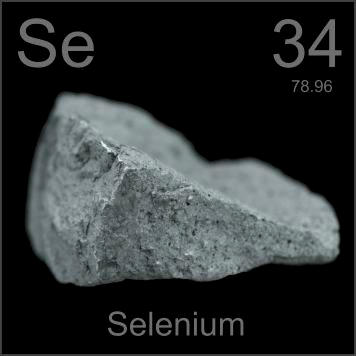

HOME
PREVIOUS
NEXT

Selenium
Atomic Weight: 78.971
Density: 4.819 g/cm3
Melting Point: 221 °C[note]
Boiling Point: 685 °C
Selenium occurs in (fairly) pure form in nature. This native selenium is exactly as it came out of the ground. It is used in many light-sensing applications: photocopiers, automatic light switches and light meters.